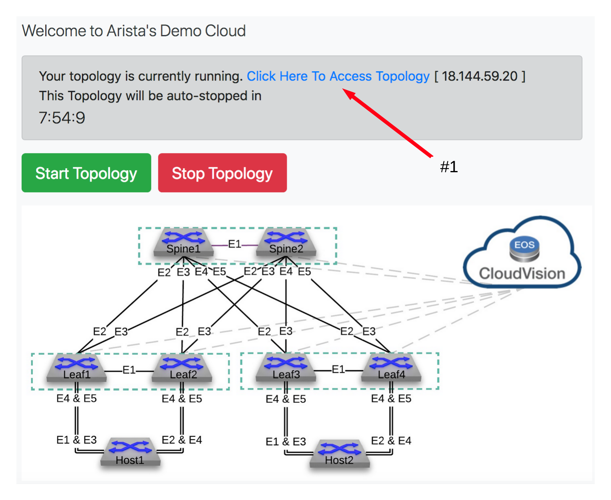
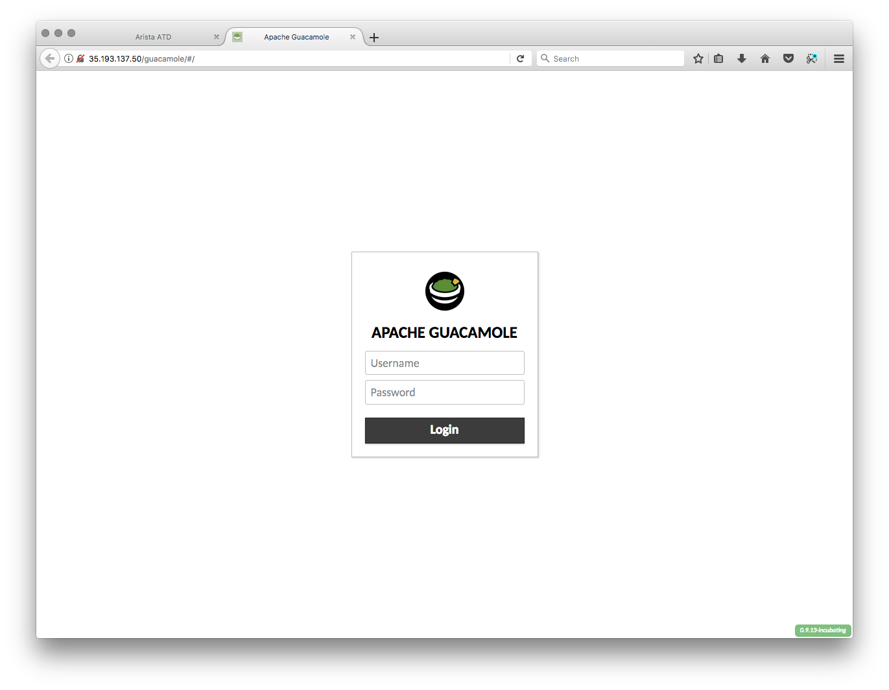
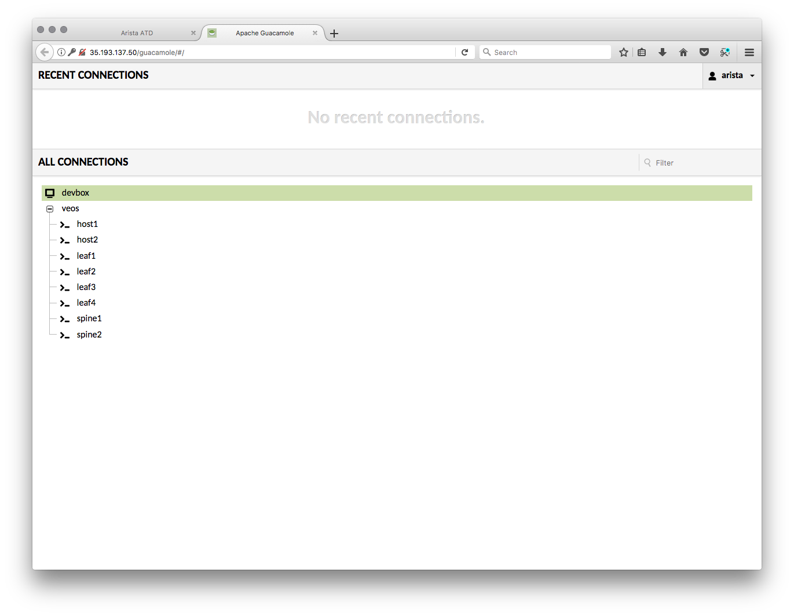

Connecting to your lab machine¶
- Before we begin, let’s set the environment.
SSH to the public IP address assigned to the LabAccess jumphost server (this is the IP address shown in the
“Welcome to Arista’s Demo Cloud” picture further below). The username is arista and the password is arista:
ssh arista@x.x.x.x
You will be greeted with the following menu:
Select option 15 (BGP Lab (bgp)), wait til the command has completed, then log out.
2. Now we need to make sure that you can access your handy lab machine! You should have received your login information (a URL) from your friendly Arista SE already. If you have not, please reach out and ask for one.
Once you receive your token, click on the link. You will greeted with a screen that looks like this:
Connect to the topology by clicking the link and click on Lab Frontend.

Note
If any of the devices listed under Lab Status are down, please contact your Arista SE.
You will be greeted with a screen like this:
Login with the username arista and the password @rista123. This will bring you to the ATD Lab Page.
This lab uses Guacamole to front end both a Linux based desktop (devbox) and the Arista vEOS virtual leaf/spine lab network. We will primarily work out of devbox.
